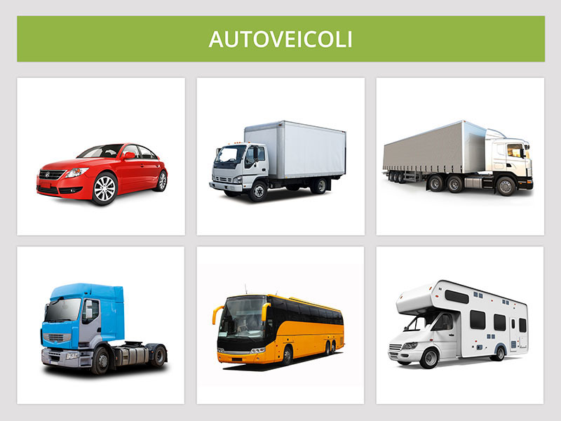

Autoveicoli

Rientrano nella categoria degli autoveicoli tutti i veicoli a motore con non meno di 4 ruote, esclusi i quadricicli.
Sono autoveicoli:
I carrelli appendice a non più di due ruote trasportati da autoveicoli (esclusi autotreni, autoarticolati e autosnodati) si considerano parti integranti di questi purché l'insieme (auto più carrello appendice) rientri nei limiti di massa e sagoma previsti.
Non sono autovetture gli autobus (più di 9 persone), i portavalori (destinato a trasporto di valori), gli autocarri (destinati al trasporto di merci).
Le autovetture possono:
Sono soggette a revisione periodica, quattro anni dopo la prima immatricolazione e, successivamente, ogni due anni.
Non si può viaggiare in piedi sugli Autocaravan ed è sempre necessario allacciare la cintura.
Sono soggette a revisione periodica quattro anni dopo la prima immatricolazione e, successivamente, ogni due anni.
Da non confondere con i caravan (roulotte), che sono rimorchi e non autoveicoli.
Sono autoveicoli:
- autovetture
- autobus
- autocarri
- trattori stradali
- autotreni
- autoarticolati
- autosnodati
- autocaravan
I carrelli appendice a non più di due ruote trasportati da autoveicoli (esclusi autotreni, autoarticolati e autosnodati) si considerano parti integranti di questi purché l'insieme (auto più carrello appendice) rientri nei limiti di massa e sagoma previsti.
Autovettura
E' un veicolo a motore con quattro ruote, destinato al trasporto di persone (massimo nove, compreso il conducente).Non sono autovetture gli autobus (più di 9 persone), i portavalori (destinato a trasporto di valori), gli autocarri (destinati al trasporto di merci).
Le autovetture possono:
- avere motore elettrico o termico
- avere trazione anteriore o posteriore
- trainare carrelli-appendice o rimorchi
Sono soggette a revisione periodica, quattro anni dopo la prima immatricolazione e, successivamente, ogni due anni.
Autocaravan
Sono veicoli aventi una speciale carrozzeria ed attrezzati permanentemente per essere adibiti al trasporto ed all'alloggio di persone (il numero massimo è indicato nella carta di circolazione).Non si può viaggiare in piedi sugli Autocaravan ed è sempre necessario allacciare la cintura.
Sono soggette a revisione periodica quattro anni dopo la prima immatricolazione e, successivamente, ogni due anni.
Da non confondere con i caravan (roulotte), che sono rimorchi e non autoveicoli.